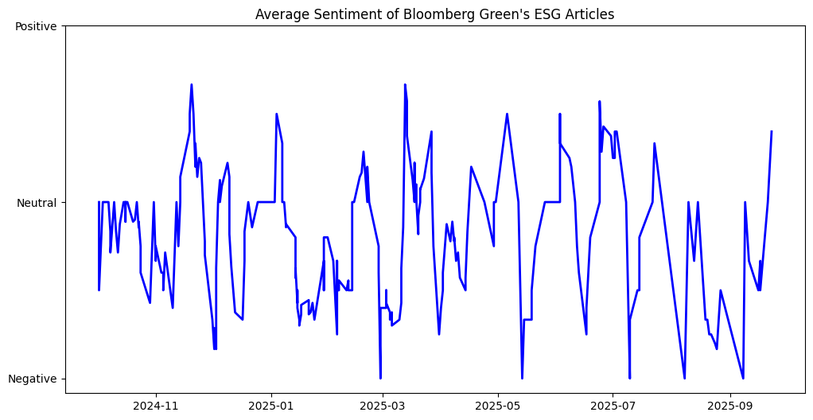
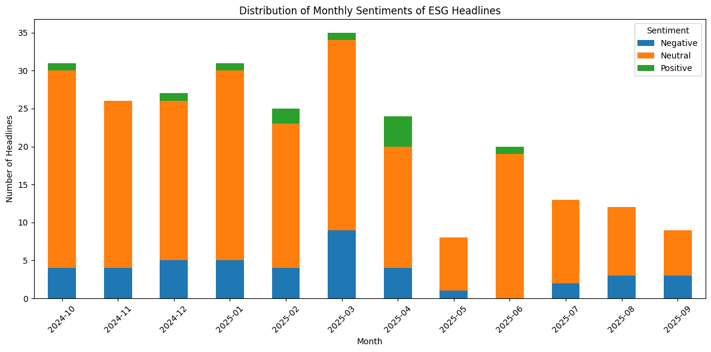
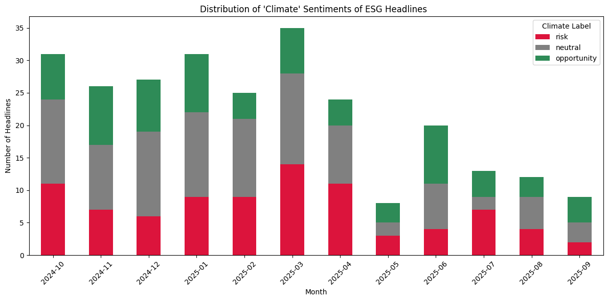
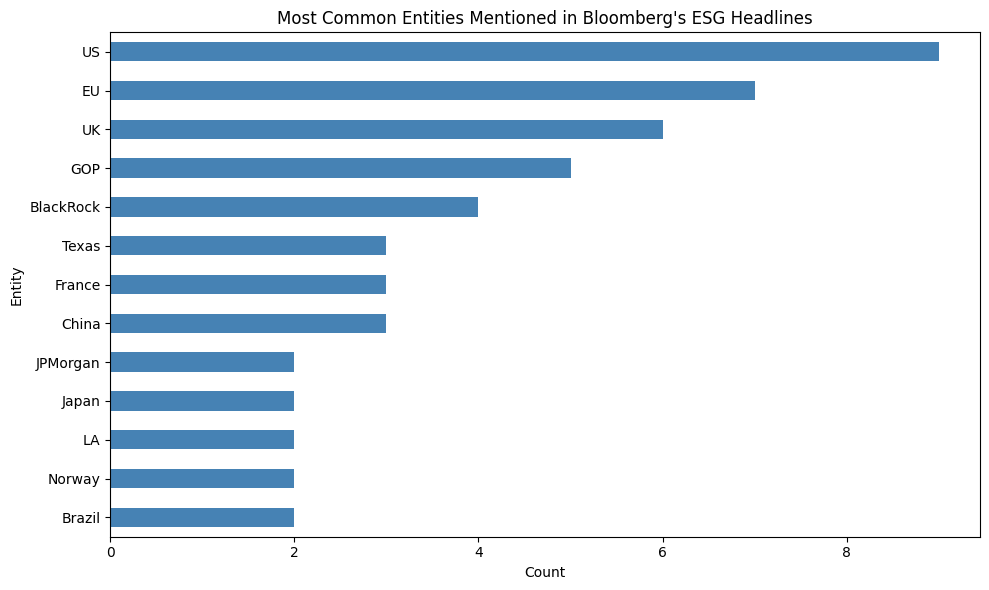
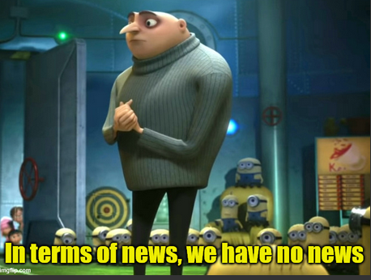

2025 has been a very interesting year for ESG.
Now as someone who works in this space, the general sentiment I keep hearing and reading these days is that “sentiment towards ESG has changed”. So I decided to go ahead and test this hypothesis by analysing the sentiment of ESG related headlines over the last year or so.
As a first step, I had to figure out my data source. I decided to go with the articles published on Bloomberg Green’s ESG and Investing section for a couple of reasons:
a) It is my personal favorite go-to-source for keeping tabs of what’s happening in this space and I read it almost every day (shout out to Alastair Marsh and Natasha White for their amazing articles!)
b) The articles are really substantive and I like how they are structured. I have been introduced to a lot of niche areas like Catastrophe (Cat) Bonds through these articles.
I was able to fetch able to fetch a total of 261 headlines ranging from late 2023 to September 2025. Then I decided to classify those headlines using VADER (Valence Aware Dictionary and sEntiment Reasoner) and see how the average sentiment has trended over time.

Overall, I would say the sentiment has fluctuated over the last year and it’s not been predominantly positive or negative. As good as VADER is for doing a preliminary analysis, it has certain limitations because it is a rule-based sentiment classifier and may not fully capture the complexity and subtleties of sentiment of the text. So I decided to run the same analysis but using caridffNLP, a RoBERTa-base model trained on ~124M tweets.

Interesting. Looking at this, I would say that neutral headlines are dominant for all the months. One can’t help but notice that positive sentiment only occupies a fraction of overall articles and in almost all cases is smaller than the negative sentiment. In fact, for some of the months, we don’t see any positive sentiment. So is this a cause for concern and should we conclude that there is very little positive sentiment regarding the ESG space?
Hold your horses.
We need to understand that sentiment analysis is very domain specific. I used cardiffNLP primarily because it’s one of the most popular model available on Huggingface for text classification and sentiment analysis. However, this model has been trained on tweets, a totally different domain compared to ESG headlines. Therefore I would take the above results with a grain of salt.
Finally, I decided to do one more analysis using distilroberta-base-climate-sentiment, a fine-tuned ClimateBERT language model developed by the amazing team of Professor Markus Leippold at University of Zurich for classifying climate-related texts into the climate-related sentiment classes ‘opportunity’, ‘neutral’ , and ‘risk’. Since it is a very domain specific language model, I wanted to see if the sentiment of ESG headlines is more opportunistic or more risk centric?

Now we have a much more even distribution of different sentiment classes for these ESG headlines. Was using a domain specific model the answer all along? Maybe. And I’ll get to it in a moment.
In the spirit of sentiment analysis, I was also curious to see what are the most frequently mentioned entities in the ESG headlines. So I decided to do a basic Named Entity Recognition (NER) using spaCy.

So it looks like US is the most frequently mentioned entity in Bloomberg’s ESG headlines followed by EU and the UK.
While this analysis did provide some meaningful insights, there are several observations and limitations that are worth mentioning:
- My proxy for ‘measuring’ the sentiment of the ESG space was getting the list of articles from Bloomberg’s ESG & Investing section. Truth is it might not be a true representative sample. For starters, the articles only go back till December 2023. While it did end up working out for my hypothesis as I was primarily interested in analysing the trend from Janaury 2024 to September 2025; having a bigger sample size might give us a better picture of the overall sentiment trends in the ESG space. Perfect example of this would be the work by Engle et al. (2019) on ‘Hedging Climate News’ where the authors construct a climate change news index that measures innovations in news about climate risk from a text corpus of Wall Street Journal articles since the early 1980s!
Compare that to the mere 261 articles I retrieved. I had considered using NewsAPI to fetch articles using keywords like ‘ESG’ and ‘Climate Change’. But the free version only allows to search articles up to a month old. Another option that I considered was using GDELT. What’s great about GDELT is that it is THE database to find headlines on almost any topic that you can image. They have different themes that they use to classify headlines as part of their Global Knowledge Graph (GKG). Problem is finding the relevant themes that would capture ‘ESG’ related headlines. There are themes like ‘ENV_CLIMATECHANGE’ , ‘ENV_OIL’ and ‘ENV_GREEN’. But extracting the ESG specific headlines felt like a challenge. In a way I felt constrained by the resources I had access to. Or in other words:
My rationale for going with Bloomberg Green was because I personally like the content that is published over there. But that also introduced subjective bias from my end. Not only that, but we all have our individual biases and almost all authors have unique writing styles. For instance, the headline may be neutral but if you read the entire article, it might have a very positive tone. Similarly if there was a headline that says ‘Catastrophe Bonds issuance grew by 84% in 2025’, a layman would assume that it is a positive development. But if you read through the complete article, you would realise that Catastrophe Bonds are making a comeback because physical risks are going up which is not a good thing. This is the classic ‘Don’t judge a book by its cover’ phenomenon.
As cool as sentiment analysis looks on paper, it is always tricky to infer the results. As I mentioned earlier it is very context dependent and can be very domain specific. Traditional sentiment analysis like VADER and cardiffNLP were picking up words like catastrophe and classifying the overall headline as negative. While using domain specific models like ClimateBERT and fine tuning these models on our specific use cases can help mitigate some of these false positives, it is something we should still be cognizant of.
Additionally, labels like ‘positive’ and ‘negative’ can have very different meanings depending on who you ask? For a FINBERT that has been trained exclusively on a corpus of financial text, words like “bonds” and “growth” combined together in a sentence might be a positive sentiment. Similarly the classification labels I got from using distilroberta-base-climate-sentiment had certain classifications that made me think twice.
For example, this headline ‘Wells Fargo Drops Targets Slammed by US Energy Secretary Wright’ was classified as ‘opportunity’ and ‘Calls for Simplifying ESG Rules Grow Louder in Europe’ was classified as ‘risk’.
Personally, I would classify the former as ‘risk’ or at best ‘neutral’ and the latter could be interpreted as an ‘opportunity’ for businesses.
As a rule of thumb, if humans are having a hard time classifying a piece of text or an image, then chances are the algorithm will struggle too.
To wrap this up, as I was running this analysis and saw the results, I asked myself “What is it that I am actually measuring?” Am I truly capturing the sentiment of what is happening in the ESG space or am I simply analysing the sentiment of Bloomberg Green’s authors and their individual headlines that I am assuming is representative of the overall sentiment of the ESG in general? Because those are two very different things. Sometimes we get excited with the prospect of measuring abstract concepts like sentiment. But in doing so, we run this risk of Goodhart’s Law that simply states “When a measure becomes a target, it ceases to become a good measure.” I had set out to capture the sentiment of ESG industry over the last year with the assumption that Bloomberg Green’s headlines are reflective of the overall sentiment. The truth is I ended up capturing the sentiment of ESG headlines written by Bloomberg Green’s authors which I think is a still useful insight!
So in conclusion, my take on the ESG space as a whole after analysis is:
